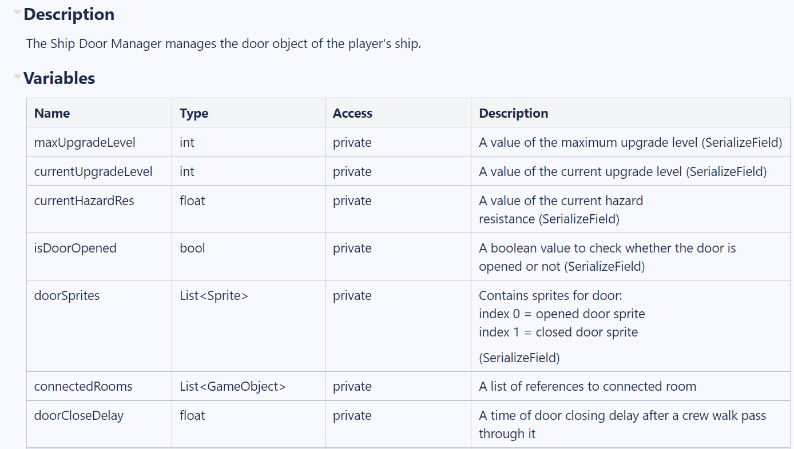
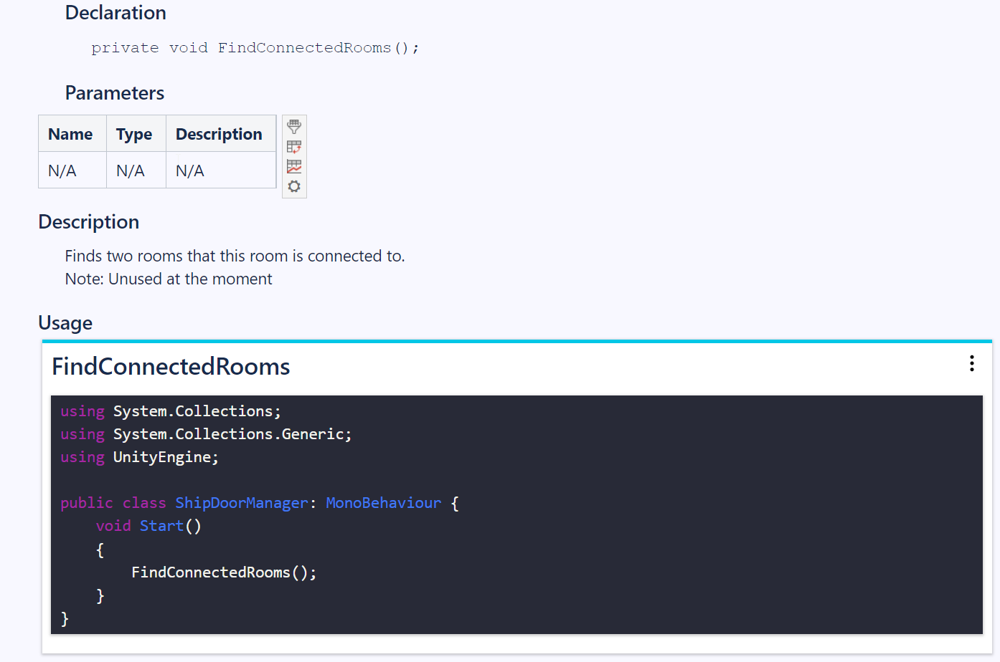

Pre-Alpha 2 Sprint
Oct 3rd, 2022 to Oct 16th, 2022 - Debug, Documentations, and Refacorization

For these two weeks, my primary tasks were to document scripts I wrote the last sprint, report any major bugs, and refactor fire hazard systems to make them interactable with the doors I implemented in the last sprint. While the result came out to be different than I expected, I made significant progress on refactoring the old system that we temporarily disabled in the summer.
Programming and Refactoring (15 hours)
For this sprint, I spent the majority of my work time on programming and refactoring features and have it interactable with features I implemented in the last sprint.
One of my tasks for this sprint was to implement import all the features I had implemented in the LAB scene to the MainCombatScene. The other major task was to refactor the fire hazard system to work with our current ship layout and make it interactable with the doors.
Originally, my task was to first make the fire interactable with the doors. The fire hazards were already implemented by one of the programmers during the summer however, due to the scope, we have disabled the fire hazard system for the summer prototype build. Now that we are expanding our hazards systems, we have re-enabled the fire hazards system but it appeared that fires would not spread to nearby tiles. Therefore, Before working on door interactions with fires, I needed to refactor the fire hazard system.
If fire hazards occur in one of the tiles of the room, the fire will spread to neighboring rooms. However, if the door is opened, the fire will spread unimpeded. If the door is closed, the fire will spread to neighboring rooms slowly. Because the doors will be closed at the start of the game and we currently do not have enemies invading the player's ship at the moment, we need a way for a player to utilize the doors' opening and closing feature to slow down the spread of fires. For example, one of the designers mentioned if the player's ship gets attacked by an enemy's projectile, it will cause door malfunctions along with the fire, thus, forcing a player to close the door manually.
Below is the code snippet of fire hazard interacting with doors:
/// Spread fire to adjacent room every 30 seconds
void FireSpreadToOtherRoom()
{
// Set it equal to 3 seconds for now since fire extinguished really quickly somehow
if (fireSpreadingTimer >= 3f)
{
fireSpreadingTimer = 0f;
GameObject thisTileRoom = gameObject.transform.parent.transform.parent.gameObject;
// GameObject playerShip = GameObject.FindGameObjectWithTag("PlayerShip");
ShipRoomManager thisRoomManager = thisTileRoom.GetComponent();
if (thisRoomManager)
{
foreach (GameObject neighborRoom in thisRoomManager.NXDRooms)
{
if (neighborRoom != thisTileRoom)
{
ShipRoomManager neighborRoomManager = neighborRoom.GetComponent();
// Find the common door between the two rooms (this room and neighbor room)
List commonDoors = neighborRoomManager.NXDDoors.FindAll(x => thisRoomManager.NXDDoors.Contains(x));
GameObject commonDoor = null;
if (commonDoors.Count > 0)
{
commonDoor = commonDoors[0];
Debug.Log($"{thisTileRoom.name} is connected with {neighborRoom.name} through {commonDoor.name}");
}
if (neighborRoomManager.ShipRoomSO.RoomState != RoomState.Fire)
{
// fire spreading between rooms with a door
if (commonDoor)
{
ShipDoorManager doorManager = commonDoor.GetComponent();
// case for door is opened
if (doorManager && doorManager.IsDoorOpened)
{
SpreadFireToNeighborRoomHelper(neighborRoom, 0.95f);
}
// case for door is closed
else if (doorManager && !doorManager.IsDoorOpened)
{
SpreadFireToNeighborRoomHelper(neighborRoom, 0.05f);
}
}
// fire spreading between ladder rooms
else
{
SpreadFireToNeighborRoomHelper(neighborRoom, 0.05f);
}
}
}
}
}
}
}
1. This is the short gameplay of the fire spreading when all doors in the ship are opened:
I am using the debug console menu to set up the fire in the random tile location for demonstration purposes. As you can see, the fire spreads to neighbor rooms very quickly if all doors are opened. This was done only for the demonstration. The actual build won't spread very fast as the video shows.
2. And here is the short gameplay of the fire spreading when all doors in the ship are closed:
As you can see, there is a great difference between the rate of fire spreading to neighbor rooms when all doors are closed or not. I still think there are a few adjustments and optimizations that need to be done. But I'm glad that I got it to work. Reading someone else's code and refactoring was surely challenging but fun at the same time.
Documentation (5 hours)
My other tasks were to create documents for new features I implemented in the last sprints (doors, floors, ladders, and walls). The script documentations are a bit different than creating a regular confluence document. The script documentation is built for new developers to comprehend the script I wrote easily. Below is an example of script documentation for doors:


As you can see, the design of the document looks similar to the Unity Documentation. This way, new developers will be able to understand and use variables or methods I implemented in their scripts easily.
Discussion and Communication (1 hour)
Because one of my major tasks for this week was to refactor an old system and connect it with my new features, communications between me and other programmers who have worked on this system were crucial. Additionally, I was struggling while refactoring the system to function. By reaching out to the programming lead, and other programmers on our team, I was able to complete my tasks on time.
Playtesting (1 hour)
For this sprint, there were two playtesting sessions by former studio alumni. Unfortunately, I was not able to attend both of them due to other class assignments. Therefore, I instead playtested our game using Unity editor and listed out possible bugs on Jira. One of the bugs was that doors in the ship was not interactable, thus, I assigned the bug task to myself and fixed the issue immediately.
Meetings (2 hours)
For two of my 24 hours of bi-weekly involvement, I spent my time in the studio meeting including
squad and department meetings.
Because the last week's meeting was the end of the first sprint meeting, we gathered as an assigned squad group
and playtested our current build. Then we all listed down the bugs or any improvements we can make
in the future in Jira.
Hours Breakdown
- PROGRAMMING AND REFACTORING: 15 HOURS
- DOCUEMNTATION: 5 HOURS
- DISCUSSION AND COMMUNCATION: 1 HOUR
- PLAYTESTING: 1 HOUR
- MEETINGS: 2 HOURS
- TOTAL HOURS FOR PRE-ALPHA SPRINT 2: 24 HOURS